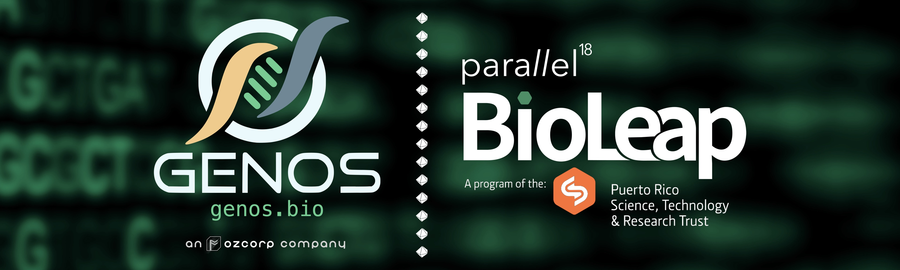
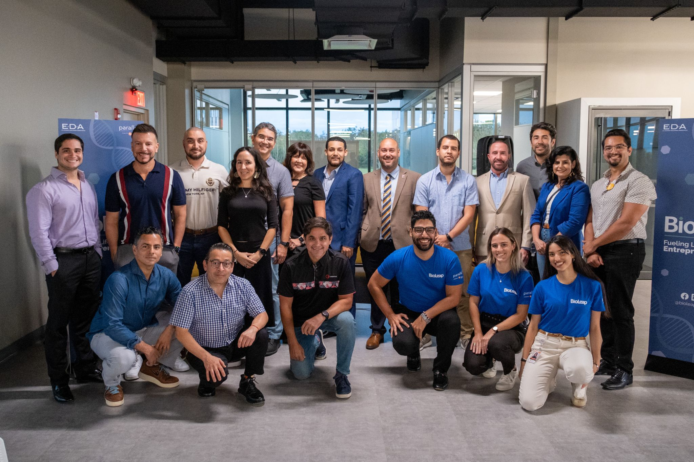

Ozcorp Scientific's portfolio venture, GENOS, to participate in the BioLeap Accelerator Program's Inaugural Cohort

GENOS, conceptualized and actively developed by Ozcorp Scientific, enables researchers to perform advanced high-throughput data analyses without substantial investments in laboratory personnel. This approach significantly reduces R&D bottlenecks, allowing scientific teams to focus on executing assays and enhancing productivity, ultimately boosting revenue streams. The selection of GENOS for the BioLeap program highlights its potential to impact the biotech industry and stimulates the development of software products. GENOS earned a spot in this competitive program among nine (9) startups chosen, which span various sectors including Agrotech, Digital Health, Healthcare Services, Artificial Intelligence, Therapeutics, and Pharmaceuticals.
GENOS is already developing alliances to service the other BioLeap companies, reinforcing Ozcorp's mission to drive biotech through strategic support and innovation.
– Osvaldo D. Rivera, PhD.
Founder & Managing Director
Ozcorp Scientific LLC
"I'm excited to see GENOS grow and thrive under BioLeap's guidance and am confident that our pioneering solutions will impact the industry." – expressed Dr. Rivera – "The BioLeap Accelerator Program is providing GENOS with invaluable resources such as workshops, mentoring sessions, and networking opportunities, facilitating the potential for rapid growth and enhancing its trajectory."
BioLeap is a program supported by the Build to Scale Program of the U.S. Economic Development Administration and managed by Parallel18 and the Puerto Rico Science, Technology & Research Trust (PRSTRT). BioLeap aims to increase economic development through innovation and entrepreneurship in the life sciences sector through key focus areas including but not limited to sustainable biotechnology, AI-driven technologies, genomics, molecular dynamics, drug discovery, novel therapeutics. As the only resource for life sciences entrepreneurs on the island, BioLeap focuses on closing the gap between cutting-edge local scientific research and its commercialization, thus advancing the establishment of local, inclusive innovation ecosystem. The program provides a single point of access to educational resources for creating a life sciences startup, such as technical assistance, access to capital, and co-working space. BioLeap utilizes PRSTRT’s renowned global accelerator, Parallel18, to provide a supportive environment where life sciences entrepreneurs can structure their businesses, launch a functional prototype, and develop patentable technologies with the goal of commercialization for exports worldwide.

Photo: The BioLeap Gen.1 cohort founders, directors, and administrative support.
About GENOS:
GENOS is a forward-thinking bioinformatics-as-a-service company enabling investigators to design and execute cutting-edge high-throughput data analyses without a significant investment in laboratory personnel, effectively reducing R&D bottlenecks and allowing the workforce to fully focus on executing assays and boosting revenue. GENOS is an organization conceptualized and actively being built by the Ozcorp Scientific biotech venture studio.
Website: https://genos.bio
LinkedIn: https://www.linkedin.com/company/genos-bioinformatics/
About Ozcorp Scientific
Ozcorp Scientific is a sole-prop technology firm dedicated to undertaking the establishment of new ventures, empowering lean business models, delivering tools to the market, and investing in the most promising ideas.
Website: https://ozcorp.io
LinkedIn: https://www.linkedin.com/company/ozcorp-scientific
For media inquiries, please contact:
media@ozcorp.io